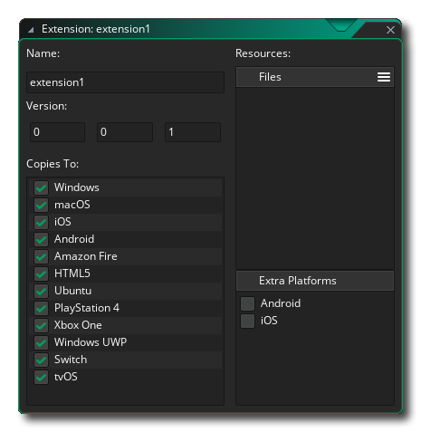
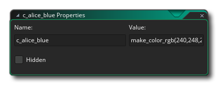

An extension package can be used to add a number of additional functions and constants to the GameMaker Language (GML), or as a way to transfer game assets or even whole projects easily between people. If the extension is to add extra functionality, then the functions used can link your game to external SDKs or source code written in other languages (like Java for Android, for example), as well as native GML. 
Normally 3rd party extensions will be from the GameMaker
Marketplace and those you have subscribed to will then be
listed in the Marketplace
Library window and can be installed from there, or by right
clicking  on the Extensions resource
folder and selecting Add Existing From My Library. If you
did not get your extension package from the Marketplace, you can
still add it to a project by again right-clicking
on the Extensions resource
folder and selecting Add Existing From My Library. If you
did not get your extension package from the Marketplace, you can
still add it to a project by again right-clicking  the
Extensions folder in the resource tree and this time
selecting Add Existing.
the
Extensions folder in the resource tree and this time
selecting Add Existing.
If you have a *.GMEZ created with a previous version of
GameMaker Studio you can add these by selecting the right
mouse button  menu option Import File.
menu option Import File.
For more information on using and creating Extension Packages please see the following sections:
Once you have added an extension to the resource tree, you should give it a name and a version number and also set which platforms you want to export it to. By un-ticking selected platforms, you can tell GameMaker Studio 2 not to export the extension as part of the executable for those platforms. You should also ensure that the extension properties match up with the target platform(s), and edit the export targets for the extension files based on the following:
- All targets: GML extensions. These are extensions made using the GameMaker Language (GML) and are compatible with all target platforms.
- Windows (Standard, UWP, XBoxOne): You can use windows DLL files (Dynamic Link Libraries).
- Mac OS: The Mac OS target can use the standard DyLib files for extensions.
- Ubuntu (Linux): For the Ubuntu target you need to make sure that your extension uses SO files.
- Html5: These platforms can use JavaScript extensions.
- Android: This platform requires an extension to be written in Java or an Android Framework SDK.
- iOS: Extensions for this platform are written in Objective C and require a *.mm and a *.h file, or if using any Frameworks, a pre-compiled *.a native file.
- PlayStation: For PlayStation 3 or 4 your extensions should be PRX files, with each target requiring a different PRX to conform to specification of the target (either PS3 or PS4). If working on a PSVita, the extension should be SUPRX instead.
Since a single extension can have various associated files, it's possible to create a single extension for multiple platforms, in which case you want to specify all the compatible platforms in the main extension editor (ie: tick the checkbox beside them) and then in the individual file properties for each part of the extension, set the platform that those files should be exported to. To change the target platform for a specific extension file or placeholder you must first open the extension properties (double click
the extension i the Resource tree or use
and select Open Properties), and then once in the extension properties select the resource file from the right that you want to edit:
NOTE: If you are exporting to the macOS or Ubuntu target, then you can set the "Uncompress as zip file" option to preserve file permissions for the extension.
Once you have installed your extension, you can use the functions and constants for it just as you would the built in functions and constants used in the GameMaker Language. If your game is cross-platform (for example, it is designed to run on both Windows and Android targets), then you should use the OS constants and functions to check the platform before calling extension specific functions to prevent issues, for example:switch(os_type)
{
case os_android:
call_android_extension_function(x, y, z);
break;
case os_windows:
call_windows_extension_function(x, y, z);
break;
}Note that for different platforms your extensions can share function names, so if you have an extension with distinct files to (for example) pop up a message for Windows and for Android, both extension files can share the same function name as long as they are both set to export only to their respective platforms.
To create an extension you first need to right click
To add a file to the new extension you need to click the menu icon
and select either a placeholder file or the actual file that is required for the target platform:
A "Generic" placeholder is a file that can be of any type, except those required by the specific platforms (so no DLL or SO files, for example), and it will not be used except as a "linker" file to connect a set of functions or constants with the given extension (generally it is only for use with iOS and Android extensions, which is explained in the sections below for those targets). You can also add "GML" and "JS" placeholder files for more specific use.
Normally you won't need to use placeholders unless building for iOS and Android, so you would choose the Add Files option to add any one of the following files depending on the target platform they are for:
- .gml: This is a file made only with the GameMaker Language and is compatible with all platforms.
- .js: This is a JavaScript extension format and is only compatible with the JS target modules (HTML5).
- .dll: This a dynamic-link library extension format and is only compatible with the Windows, UWP and Xbox One targets (each target will need a different *.dll file compatible with its specifications).
- .dylib: This is the Mac equivalent of a DLL and is only compatible with Mac target (not iOS).
- .so: This is the Linux equivalent of a DLL and is only compatible with the Ubuntu (Linux) target.
- .prx: This is a file format for adding functionality PS4 target (each target will need a different *.prx file compatible with its specifications).
You'll notice that there is no file type for Android nor iOS, which is because their setup is slightly different. Further down you can find explanations on how to set them up but first let's look at creating a general GML extension for any of the target platforms, since the process is the same for all of them.
To start with you need to create the file that is going to be used. For a GML extension, this would be a text file (saved with the .gml extension) and would be formatted something like this:
#define c_alice_blue
return make_color_rgb(240,248,255);
#define instance_create_colour
var i = instance_create_layer(argument0, argument1, argument2);
with (i)
{
image_blend = argument3;
}
return i;As you can see we start each section with a #define call, which in the example above is used to define two functions. You don't need to supply argument fields for the functions as this will be added later, simply use the define then the name of the function and go ahead and add the GML to match. If you were writing a DLL or JS extension, then the process would be similar but in the correct language for the extension file format.
Once you have done that you need to add the file to the extension (explained above) which will chain a new window to the Extensions Properties for the File Properties:
Here you would select the target platform for the extension (for GM you would select them all), as well as rename the extension file and set a few other details, which we'll cover in a moment. First of all though we want to add in our constants and functions so that the user can call the extension from within their project code. For that you need to click the functions menu button
Selecting Add Function will then permit you to add a function to the extension which can then be called in GameMaker Studio 2 as you would any of the built in functions. The following window opens for you to define the function in:
In the image above we have populated the function editor with the details for the function instance_create_colour that we defined in our GML extension script (the function editor isn't just for defining GML functions and will be the same for any other extension type). You can see we have given the function a name, which is what you would call when using the function in your project, and this name doesn't have to match the one used in the extension - you can set it to anything you want and then use the External Name option to link it to the actual name defined in the extension. Below that you have a section for defining the Help text, which is the text that will be used in the code complete pop up and the helper text at the bottom of the code editor.
Next you can define the return type, which can be a double (real number floating point value) or a string - if there is nothing returned by the external function then this does not matter - and under that you define the arguments that the function will take.
Finally, you add the arguments (if any) that the function can take. Arguments can be either doubles or strings, and you can add them by clicking the add button
and remove them by clicking the remove button
. If your function can take variable arguments, you should also make sure to check the Variable Length Arguments checkbox at the bottom.
NOTE: If you are creating a Windows dll file and it has more than four arguments, all arguments must be of the same type.Once you have done all that then function is ready to be used in a project and it will show up in auto complete and be colour coded too. Defined functions can also be set as Init Functions or Final Functions, meaning that they will be called automatically when the game starts (Init) and when the game ends (Final).
IMPORTANT! All platforms support the Init function call, but not all platforms will perform the Final function call. This is because certain platforms will simply close the app without giving any notice or time for this function to be called. The platforms that are affected by this are: iOS, Android, HTML5, PlayStation and XboxOne.
The other option you have is to create a Macro. A macro can be a constant value or a single code snippet (for more information on macros, please see here). For example, we could remove the defined function from our example GML extension above for the colour c_alice_blue and make it a macro instead. To make a macro, simply click the Macros button in the Extension Properties window: The editor here is pretty much self explanatory - you give the name of the macro/constant and the value, or a short line of code. Note that if the macro is a line of code it will be evaluated every time the macro is called.
When working with multiple target platforms, it is worth noting that you can create a single extension with only one set of functions/macros which will work on all platforms. This is achieved by adding only one of the link libraries to your game as an extension and placing the other(s) into the list of Proxy Files from the Extension Properties window. For example, say you have a Windows extension with the dll "Haggis.dll". You would simply replicate this dll as a Mac DyLib, naming it "libHaggis.dylib" and making sure that the internal function names match those of the original Windows dll. This DyLib would then be added into the Proxy Files and set to export when the game is run on the Mac target, and GameMaker Studio 2 will automatically use it when the extension functions are called.
To add a proxy file, simply click the
button in the Extension Properties window for the extension and browse to the file location. Once it is added you may need to change the extension target to the appropriate module, and when you next run your game it will be included as a proxy for that platform. You can remove proxy files too by clicking the
button, which will remove the last one in the list each press.
Once you have added your proxy files they will be stored in the YYP of your game, in the Extensions folder (you can find them easily by right-clicking
It is very important that your proxy files follow the naming conventions listed below, as GameMaker Studio 2 will parse these names and assign the target module for the file according to its extension and name and will automatically link the files for you. If you do not follow these conventions your game may not work at runtime, as GameMaker Studio 2 will not be able to work out which file to use or it will not load the file properly.
The naming conventions for each target platform are given below:
Platform Names Windows <Name>.dll. Linux <Name>.so, lib<Name>.so, <Name>_linux.so, lib<Name>_linux.so Mac OSX <Name>.dylib, lib<Name>.dylib HTML5 <Name>.js PS4 <Name>.prx, lib<Name>.prx, <Name>_ps4.prx, lib<Name>_ps4.prx Xbox One <Name>_xboxone.dll Using the conventions above, you would swap out the <Name> part for the name of the base file that you are adding the proxy files for.
To create an extension for Android you have to do it in two parts. The first part would be to add the extension itself, along with the required files etc... and the second is to create the functions and macros/constants that the extension requires. The functions and constants are added using placeholder files to group them together, so you'd add a placeholder and then define the functions and macros as explained in the section above. To add the rest of the files though you need to first tick the Android check-box in the Additional Features section of the editor:
Here you give the following details:
- ClassName: Your extension can have multiple classes, with each class having its own functions and constants, so you should give it a name that reflects its purpose.
- Android Permissions: Here you can add in any extra permissions that your extension requires. What these permissions are will depend entirely on the use that the extension has, and so you should check the documentation supplied by Google for the Android platform, or, if you are using a third party SDK, the documentation that comes with the SDK. To add a new permission you need to click the
- Inject To Gradle Dependencies: Here you can add any extra code that needs to be injected (added) into the Gradle build dependencies.
- Inject to AndroidManifest.xml Manifest: Here you set any extra code to be injected (added) to the Android Manifest XML file when your game is built for testing or final release. Make sure to revise this (and your permissions) carefully before submitting any games to the store, as incorrect settings will cause your game to be failed for submission.
- Inject to AndroidManifest.xml Application: Here you set any extra code to be injected (added) to the Android Manifest XML file under the Application heading when your game is built for testing or final release. Make sure to revise this (and your permissions) carefully before submitting any games to the store, as incorrect settings will cause your game to be failed for submission.
- Inject to AndroidManifest.xml RunnerActivity: Here you set any extra code to be injected (added) to the Android Manifest XML file under the RunnerActivity heading when your game is built for testing or final release. Make sure to revise this (and your permissions) carefully before submitting any games to the store, as incorrect settings will cause your game to be failed for submission.
Once you have set this up correctly, you will need to add the required files for your extension package to work. To do this you need to click on the buttons at the bottom, either Add SDK or Add Source and then browse to the files you wish to add. Added files will be stored in the AndroidSource directory along with your extension. You can open this location at any time by right clicking
For more information on creating Android extensions, please see the YoYo Games Knowledge Base.
To create an extension for iOS you have to do it in two parts. The first part would be to add the extension itself, along with the required files etc... and the second is to create the functions and macros/constants that the extension requires. The functions and constants are added using placeholder files to group them together, so you'd add a placeholder and then define the functions and macros as explained in the section above. To add the rest of the files though you need to first tick the iOS check-box in the Additional Features section of the editor:
Here you give the following details:
- Linker Flags / Compiler Flags: Some frameworks and third party SDKs require the addition of extra linker flags and compiler flags to work which can be specified here (see the documentation that accompanies the SDK or framework in question for details).
- Class Name: Your extension can have multiple classes, with each class having its own functions and constants, so you should give it a name that reflects its purpose
- App Delegate Class Name: The name of your custom app delegate class. Setting this allows the extension to override/extend core app functionality. To use this feature you need to do the following:
To ensure your extension works with any other extensions that use custom app delegates, you should call any base class methods from overridden methods in your child class. Before calling the superclass method, you need to make sure it is implemented in the class hierarchy to avoid errors, for e.g.:
- Ensure that the delegate source files have the same name as the delegate class (e.g. @interface MyCustomAppDelegate should be defined in "MyCustomAppDelegate.h")
- Add the ${YYExtAppDelegateIncludes} environment variable at the top of your app delegate header file. This will be replaced at compile-time with the relevant include files for the parent delegate class.
- Use the ${YYExtAppDelegateBaseClass} environment variable as the base class for your custom app delegate. This will be replaced at compile-time with the correct base delegate class.
- (BOOL)application:(UIApplication *)application willFinishLaunchingWithOptions:(NSDictionary *)launchOptions
{
// Check if any superclasses implement this method and call it
if([[self superclass] instancesRespondToSelector:@selector(application:willFinishLaunchingWithOptions:)])
return [super application:application willFinishLaunchingWithOptions:launchOptions];
else
return TRUE;
}
- System Frameworks: Here you can add in any iOS system frameworks to your extension. These are added by clicking the
- Inject to Info.plist: Here you can add any code to be a injected into the info.plist file.
- 3rd Party Frameworks and Bundles: This section is for adding third party frameworks and SDK bundles. As with system frame works you click the
If your extension has had any System Frameworks or 3rd Party Frameworks added, these will now be listed in the Extension Properties window, with each one having a check-box beside it. If you mark the check-box, you are enabling weak linking, which is useful should you need to "over-ride" any symbol from the included library with your own value, but it should be noted that doing so will slow linking down.
For more information on creating iOS extensions, please see the YoYo Games Knowledge Base.


YoYo Games 3rd Party Extensions
Legacy versions of GameMaker had a lot of 3rd party functionality built in, but this was inefficient and difficult to maintain, since if any specific functionality was changed by the third party, then the whole GameMaker IDE and runtime would have to be updated. So, current versions have adopted the use of extensions packages to add third party support to your games. This means that you can add only those extra functions that you require and that you can even adapt and edit them to suit your specific needs.
Most of these extensions will be downloaded and installed for you when you select a specific Game Option (like Facebook or Google Ads for example), but you can find further information about them from the following YoYo Games Knowledge Base articles:
You can find the extensions themselves from the following Marketplace page:
Note that these extensions come with a demo and a help file that explains how to use them, and as such their functions are not covered in the manual.